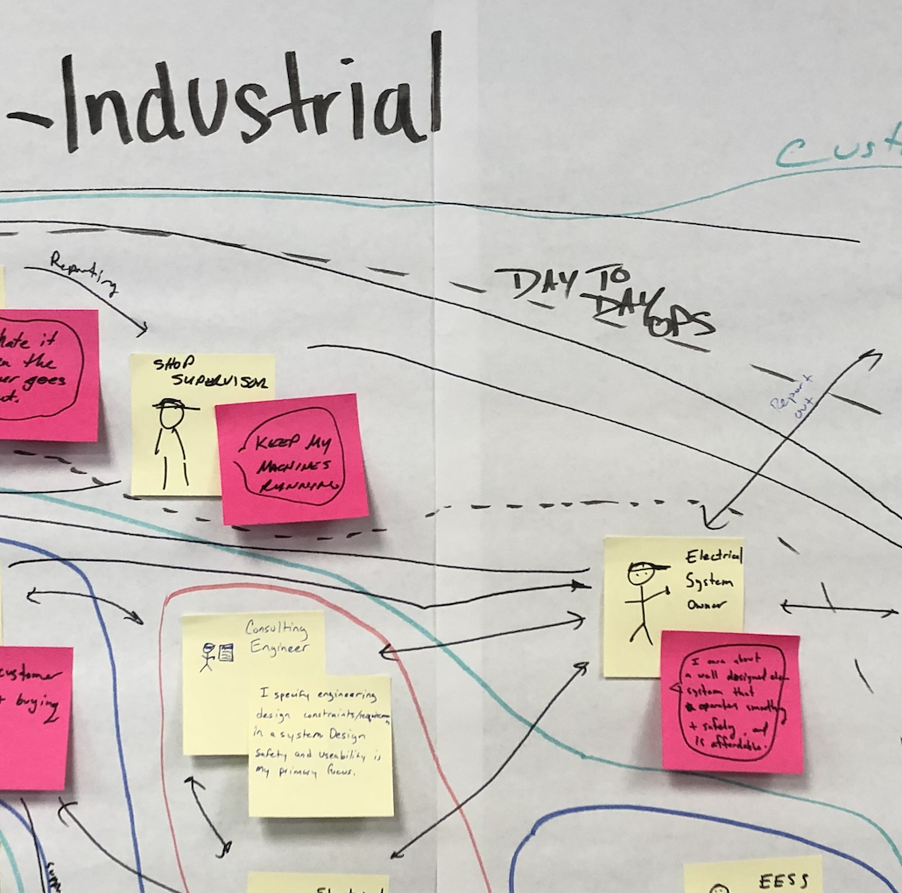
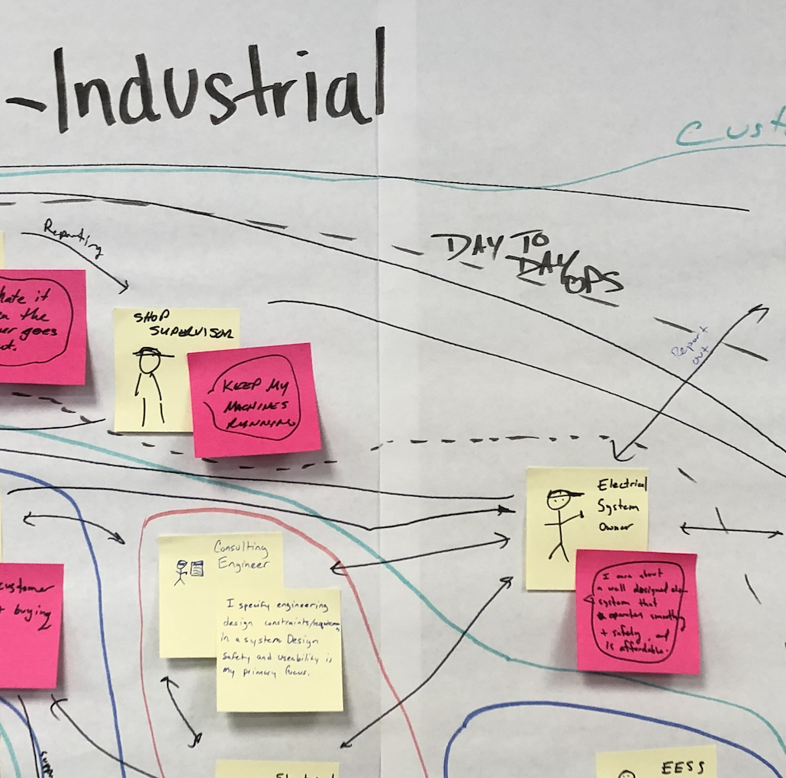

Professional Background
Last 10 years...
4 years at Hexagon → digital thread for manufacturing, machining, and quality
7 years at Eaton → worked across business units (Crouse-Hinds industrial safety, Cooper lighting, remote monitoring, luxury home security)
Majority in Lead / Principal roles


Experience Highlights
- Design Leadership: Led the creation and growth of in-house design teams, earning multiple iF Awards and industry recognition (Hexagon Manufacturing Intelligence, Eaton)
- Platform Development: Built a zero-to-revenue platform at Hexagon, now a portfolio of revenue-generating apps transforming licensing and user management for modern manufacturing
- Design Systems: Product manager for a 0–1 design system, including a robust React component library and a new, AI-ready design language
- Industrial Innovation: Seven years at Eaton as Lead Designer, driving innovation in heavy industry, green energy (EV charging), lighting systems, and data center applications
- Team Management: Currently managing a high-performing, fully remote, global team of designers
Awards & Recognition
- iF Design Award Winner: Hexagon Nexus Platform Ecosystem
- iF Design Award Winner: Hexagon Nexus 3D Whiteboard
- iF Design Award Winner: Hexagon Nexus Home
- 2024 In-House Design Team of the Year (AIGA Pittsburgh)
- iF Design Award Winner: Eaton Brightlayer Industrial Remote Monitoring App
Design Leadership + Strategy

Co-design sprints and Design Thinking sessions are one way I've helped lead cultural transformation.
Eaton
App Suite: Designed and revealed apps like:
- Brightlayer Industrial
- Asset Manager
- Remote Monitoring Tools (in partnership with WellAware)
- Power Monitoring Software
- White-label versions for customized client needs
Portfolio Gallery


 
